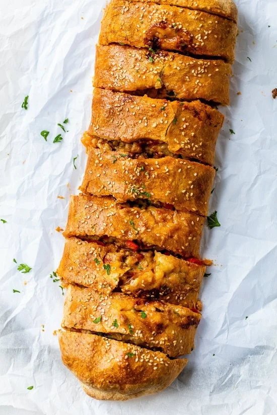

Stuffed Sausage Bread
Prep Time: 10 min | Cook Time: 50 min | Resting Time: 1 hr | Total Time: 2 hr

Description
This easy Sausage, Pepper and Onion Stromboli (Stuffed Sausage Bread) is stuffed with Italian chicken sausage, peppers, onions, spicy pomodoro fresco, and mozzarella cheese.
Ingredients
- 16 ounces pizza dough (from a little more than half of 1 Delallo pizza dough kit)
- 1 teaspoon olive oil
- 1/2 medium onion
- 1/2 red bell pepper (sliced 1/4 inch thick)
- 1/3 cup Delallo Spicy Arrabiatta Pomodoro Fresco
- 2 Italian Chicken Sausage Links (5 1/2 ounces total removed from casing)
- 3/4 cup part-skim shredded mozzarella cheese
- 1 egg white (beaten)
- sesame seeds (optional for topping)
Instructions
- Prepare the pizza dough as instructed on the package.
- This will need to rest about 1 hour. Once it’s ready, set aside 16 ounces and refrigerate the other half for another use.
- In a medium pot over medium heat cook the sausage 3 minutes, then set aside. Reduce heat to low and add the olive oil and onions, cook stirring 5 minutes. Add the peppers and Spicy Arrabiatta Pomodoro Fresco. Cover and simmer low to medium low 15 minutes, until tender. Set aside to cool completely.
- Preheat the oven to 500F and set rack in the center of the oven. Spray a nonstick sheet pan with oil.
- With a rolling pin, roll out the dough on a floured surface to a 16 x 10 inch rectangle.
- Place the onions and peppers leaving about 1 1/2 inch from the edge. Top the sausage over the peppers and onions. Top with cheese. Use the egg wash and brunch along the edge of the dough.
- Fold one side of the dough over to cover the filling, then the short edges, followed by the other side, stretching slightly to seal, pinching the ends so nothing oozes out.
- Lay the bread seam side down on the prepared pan. Cut small slats in the top and brush with egg white. Top with sesame seeds, if using.
- Bake 10 minutes 500F, then reduce the heat to 375F and cook 18 to 20 minutes longer, until golden brown on top and cooked in the center.
- Remove from the oven and let it cool before slicing into 8 pieces.